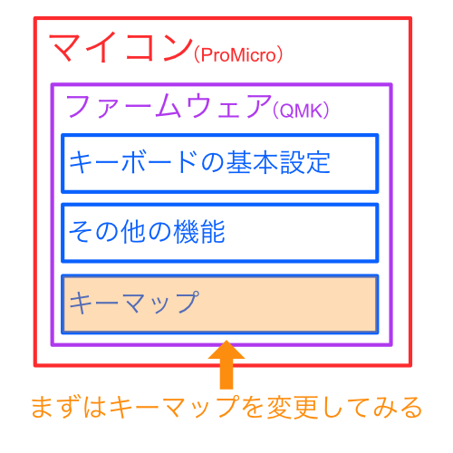
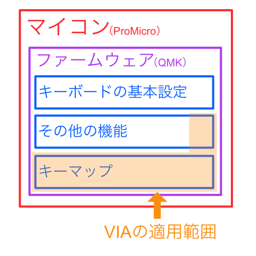

10. ファームウェア
ハードウェアの準備は終わったので、ソフトウェア側に入っていきます。
1回できるようになってしまえばキーマップの追求に集中できるので頑張っていきましょう！
※わかりやすさのためにおおざっぱな説明があります。気になる表現などありましたらご連絡ください。
知っておきたいこと
マイコン
- キースイッチが押された時に、どのキーが入力されたかをPCに伝える必要があります
- （もうちょっと複雑なこともしますが）
- このような処理をするのに頭脳となるコンピュータが必要になります
- wings42ではProMicroというマイコン（マイクロコンピュータ）を使用しています
- ↓これです

ファームウェア
- マイコンを動かすためには、アプリのようなものを入れてあげなくてはいけません
- マイコン用のアプリのことをファームウェアと呼びます
- wings42ではQMKというオープンソースのファームウェアを使用しています
- wings42に付属の「ProMicro」には「wings42用に設定されたQMK」が入った状態になっています
- QMKについては、公式ドキュメント を参考にしてください。
- 有志の方の翻訳のおかげで、かなりの部分が日本語で読めます。ありがとうございます！
キーマップ
- キーマップとは、どのキーを押したらどのキーが入力されるか、という設定のことです
- 上記の「wings42用に設定されたQMK」には、デフォルトのキーマップが既に入っています
- しかし、このままでは最初に設定されているキーマップでしか使用できません
- キーマップを変更することで、例えばスペースキーを割り当てていたキーをエンターキーに変更したりすることができます
- デフォルトのキーマップは例でしかないので、自分に合ったキーマップを作っていきましょう！
まとめるとこんな感じです

キーマップを変更する
キーマップを変更するためのツールを使います。
下記の3つがあるのですが、Remapが一番使いやすいと思います。
Remap
- Remap
- Remapの使い方は（初心者編）Remapを使ってキーマップを書き換えよう - 自作キーボード温泉街の歩き方が参考になると思います。
VIA
※注意：VIA側にまだ取り込まれてないため、↑Remapをお使いください。
QMK Configurator
- 公式ドキュメントを参照ください
ここから先はVIAに慣れてからでも良いと思います。
初めての方はさらっと流し読みしておいてください。
ファームウェアを変更する
QMKの機能のうち、VIAが変更できる範囲はこのようなイメージです。
（キーマップ＋レイアウトやLEDを光らせるなど機能など。今後、増えていく可能性もあります）

キーマップを設定していく中で、機能の精度がしっくりこなかったり、もっと違う機能を入れたくなったりすると思います。
その場合に、VIAでは対応できない範囲が出てくるので、自分でファームウェアを作成することになります。
プログラミングの知識が多少必要だったりするので少しハードルは高いですが、より良い体験を目指してがんばってみましょう！
※ソフトウェアエンジニアの方は最初からこちらの方がしっくりくるかもしれないです。
自分でファームウェアを作る方法
Last modified January 1, 0001